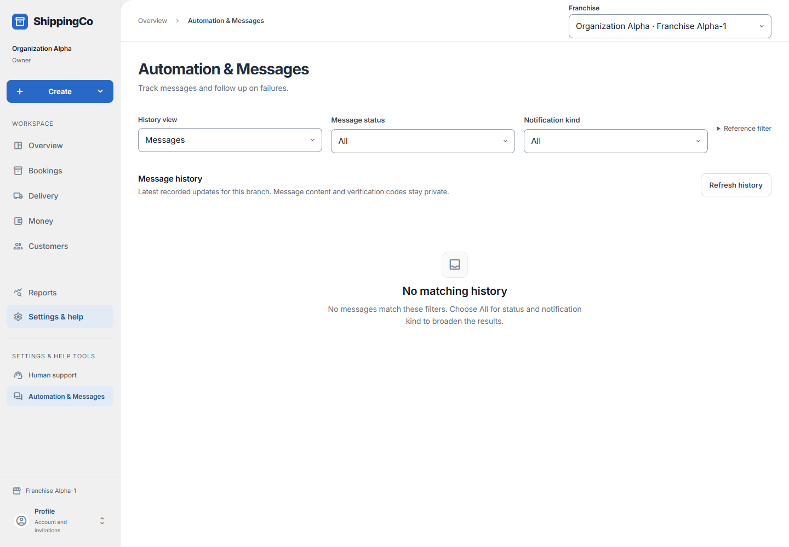

Automation and messages
See whether shipment messages were queued, sent or delivered.

Before you start
Messages come from saved business events. This is a history and recovery screen, not a general message composer.
Read message evidence before recovery
- Open Settings & help, then Automation & Messages under Settings & help tools. Messages is the delivery-status history; Automation is the record of processing decisions. Changing History view resets its status and kind choices.
- Message status can distinguish Waiting, Sending, Accepted by provider, Delivered, Read, Suppressed, Failed and Uncertain. Automation outcomes describe processing, not a customer receipt. Choose All to widen the list.
- Notification kind selects the business update, such as booking confirmation, dispatch, route delay, delivery verification or delivery completion. Reference filter is optional: open it, enter an existing Correlation reference and select Apply correlation.
- Inspect opens Notification evidence. Read recorded attempts, their outcome/reason and time, and any route fanout decisions. Refresh detail checks for a newer status. Load older history extends the main list.
- Redrive original message and Send route reminder appear only for permitted recovery states and staff. If an uncertain send needs confirmation, investigate existing provider evidence first; another send may duplicate a message.
- This page does not send arbitrary emails or connect a new courier or messaging provider. It records configured message processing. Message bodies and delivery codes remain private.
Quick steps
- Open Automation & Messages. Choose Messages or Automation.
- Filter by status and notification kind.
- Select Inspect to read status, attempts and safe references.
- Refresh detail before a recovery action. An authorized administrator can use Redrive original message when offered.
- If a route reminder is eligible, select Send route reminder.
Fields on this screen
- History view: Messages shows delivery status. Automation shows decisions made by the app.
- Message status / Automation outcome: Choose a status, or All.
- Notification kind: Choose the type of update, or All.
- Correlation reference (UUID): Optional advanced filter linking related records. Enter a saved reference and select Apply correlation.
What happens next
The app records message attempts and provider outcomes. “Accepted by provider” does not mean the customer received it. Message text and verification codes are not shown here.
If you get stuck
- No matching history: choose All for filters and clear the correlation reference.
- Uncertain outcome: investigate the provider evidence before retrying. A retry may send a duplicate.
- A failed message does not necessarily mean the booking or pickup action failed. Check that business record.
- Recovery buttons depend on your access and the saved message state.
About this guide
Checked against the current app source on 1 November 2026. Buttons depend on your access and the current record. This guide does not give extra access.